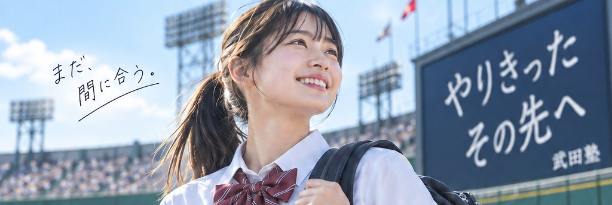
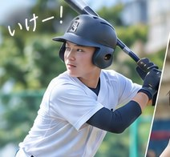
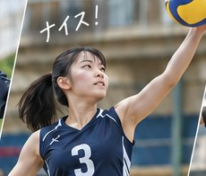
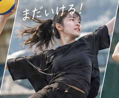
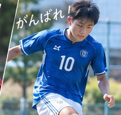
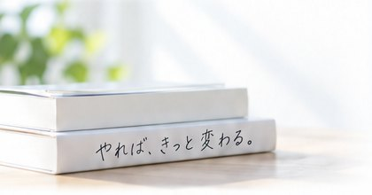
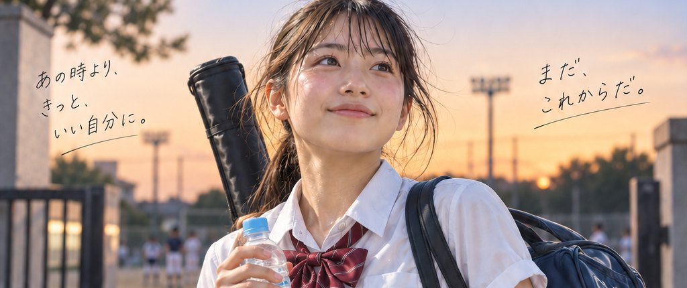

努力は量じゃない、 “やり方”だ。
引退、おつかれさま。
次は、受験だ。
部活も、受験も。これまでの頑張りは、正しいやり方で報われる。
武田塾からのメッセージ
部活をやり切った学生を、
武田塾は全力で応援します！
最後の試合まで、全力で。
そのあとの受験も、全力で支えます。

武田塾の応援
部活も、受験も
欲張れ!!
どっちかを選ぶ必要なんて、ない。
部活を最後までやりきっても、
“やり方”さえ変えれば、
引退してからでも逆転できる。
武田塾は、全部に本気なきみの味方です。




頑張る高校生を、
応援します。
全員、応援してる。
勉強だけではありません。全国の、頑張る場所に。
春
- 選抜高等学校野球大会（阪神甲子園球場 壁面広告）
- 日本高校ダンス部選手権 DANCE STADIUM（春・新人戦）
- 全国私立高等学校男女バレーボール選手権大会（さくらバレー）
- 全国高等学校ハンドボール選抜大会
- 全国高等学校ボクシング選抜大会
- 風間杯争奪全国高等学校選抜レスリング大会
- 全国高等学校男子・女子ソフトボール選抜大会
- 高校女子サッカー大会
夏
- 全国高等学校野球選手権大会（阪神甲子園球場 壁面広告）
- 全国高等学校総合体育大会（インターハイ）
- 日本高校ダンス部選手権 DANCE STADIUM（夏・全国大会）
なぜ、武田塾なら
“逆転”できるのか。
答えは、授業をしないこと。
足りないのは授業ではなく
“正しいやり方”だから。
-
① 診断・逆算
今の学力と志望校から逆算して、やることを参考書1冊単位で決めます。
-
② 実行
毎日やることが明確だから、迷わない。1冊を完璧にするまで進めます。
-
③ 確認テスト
本当にできたかを毎日チェック。分かったつもりは、ごまかせません。
-
④ 定着→次の1冊
完璧になったら、次の1冊へ。この繰り返しで、合格に必要な力が積み上がります。
E判定から、
逆転する。
引退してから始めても、間に合う。
“やり方”を変えた先輩たちの結果です。
-
偏差値 平均
+14.2
-
E判定からの逆転合格
多数
-
合格者
2,480名
偏差値の推移（平均）
引退してからでも、
ここまで伸びる。
- 国公立
- 早慶上理
- MARCH
- 関関同立
- その他 多数
※数値・実績はイメージです
無料 やり方診断
3分で、
勉強の“やり方”
を診断する。
まずは、自分のやり方を
確かめてください。

Q1 / 5
登録不要・メールアドレス不要。結果はその場で表示。

無料 受験相談・体験
次の試合は、
受験だ。
授業はしない。参考書を1冊ずつ完璧に。
だから、引退してからでも間に合う。
無料の受験相談で、志望校までの
“やり方”をひとつ持ち帰れます。
入塾は、それから。